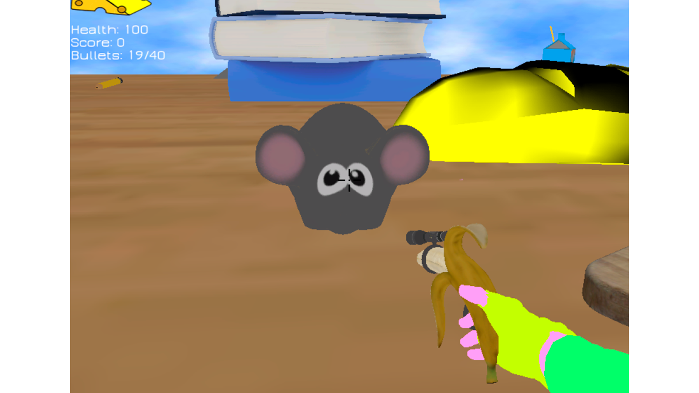
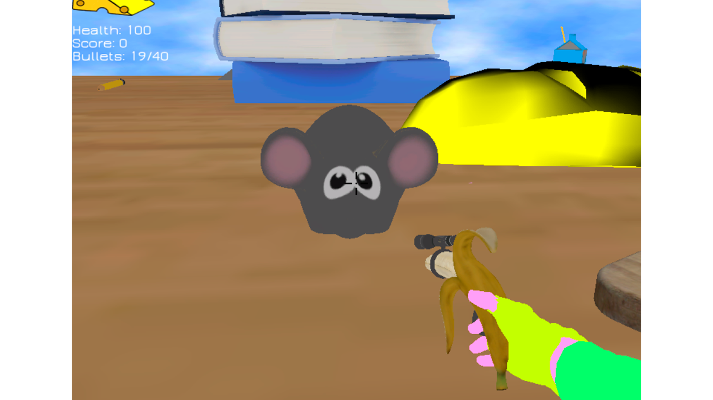

Chis

Chis es un videojuego creado con Ogre3D para la asignatura de Proyectos 3.
En este caso, como a simple vista se puede apreciar en las imágenes, el juego no destaca ni por su apartado artístico ni por su jugabilidad, sino por el motor que tiene por detrás.
El objetivo de esta asignatura por lo tanto era la realización de un motor de videojuegos utilizando como base el motor gráfico de Ogre3D, al que se le añadieron funcionalidades físicas con Bullet3D, de sonido con FMOD y de interfaces con CEGUI, además de una arquitectura por componentes y lectura de estos así como de objetos, posiciones, materiales y shaders mediante blueprints.
Imágenes del juego
 



¿Cómo instalarlo?
Debido a la escasa o nula jugabilidad, no he creído que mereciese la pena descargar este proyecto. Pese a ello, como a nivel de arquitectura y programación es un proyecto bastante interesante, si alguien tuviese curiosidad sobre él que no dude en pedirme el código mediante cualquiera de las formas de contacto que se encuentran al final de esta página.